Source · fixed crop
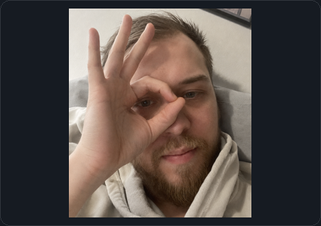
Eight vector-stencil + glyph-fill variants. Dark and light are shown at the real README panel size; no final candidate is selected.

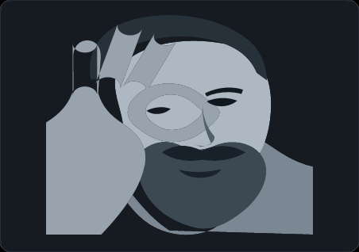
Three broad tones with restrained medium glyphs.
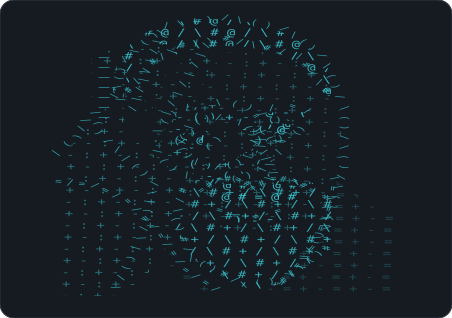
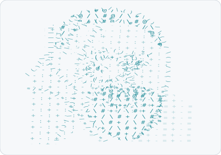
Four semantic tones preserve the face, hand, beard, and hoodie planes.
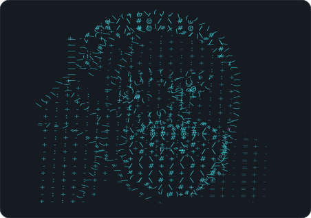
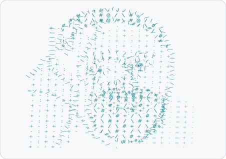
Small tightly packed glyphs retain the most stencil detail.
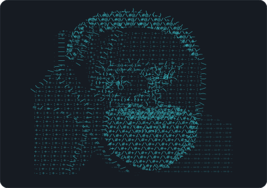
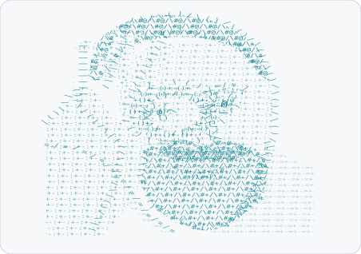
Large widely spaced glyphs test whether the silhouette reads unaided.
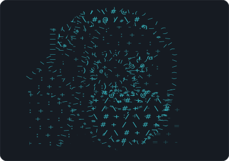
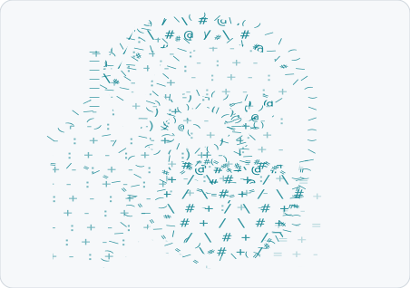
Sparse interiors with stronger glyph-built critical contours.
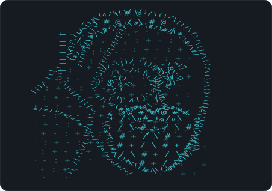
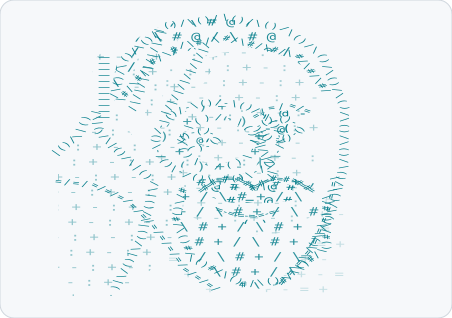
Denser beard, hair, eye ring, and hand gesture with quieter skin.
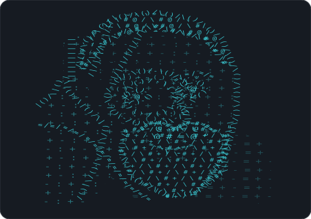
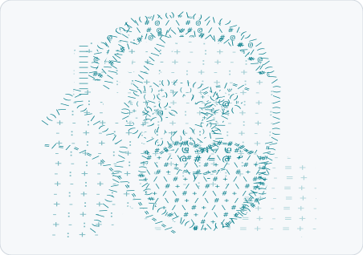
Very large symbols make the construction unmistakably typographic.
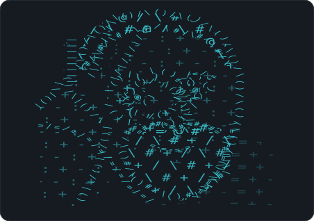
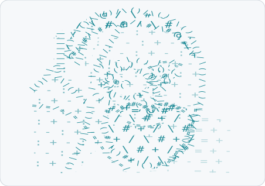
Mixed glyph sizes and slight row rotations follow the portrait curvature.
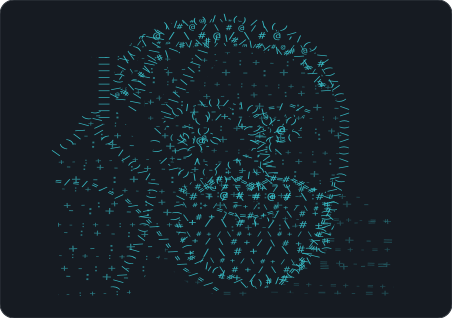
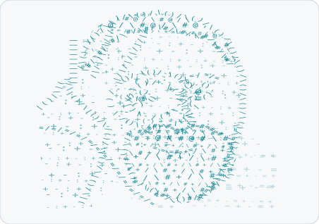